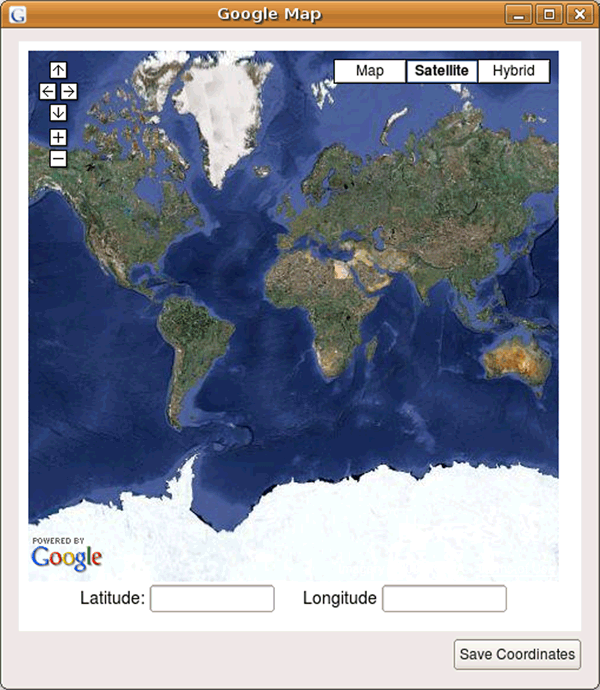

Table of Contents
This document was generated 2009-03-11 16:48:35.
EasyGeoTagger ( EasyGT ) is an easy-to-use open source software application for geotagging digital images that runs on Linux, OSX and Windows. Geotagging is the process of embedding geographic coordinates ( i.e., latitude and longitude ) and other spatial attributes into a digital image. This geographic information can be used to document, for example, the location where the photographer took the image and the direction the camera was pointing. Geotagged images can be used to identify and monitor changes in a landscape over time, which makes EasyGT a powerful tool for conservation and natural resource management initiatives. Our goal in developing EasyGT is to simplify the process of geotagging digital images and to promote photo-monitoring and the effective use of ground-based digital imagery in scientific initiatives focused on identifying and quantifying changes in the Earth's terrestrial and marine environments
EasyGT also comes with additional plugins that greatly extend the capabilities of QuantumGIS ( QGIS ), a free and open source desktop geographic information system. EasyGT includes a native QGIS data provider and accompanying plugin ( LoadExifDataset ) that allows a directory of geotagged images to be treated as vector ( point ) data source. Together with the Event Visualization Tool ( eVis ), natural resource managers, conservation practitioners and general enthusiasts have access to powerful suite of free tools for editing, mapping, and displaying digital images in a geographic context.
With EasyGT, geotagging is...just easy.
Pulldown menu commands appear in
Sequential pulldown menu commands are concatenated using ">" (i.e., → )
Window titles and titles or headings for parameter input objects (radio buttons, text boxes, drop-down menus) are in bold (i.e., Mode: dropdown list)
Window tabs will be in bold but they will be followed by “tab” (i.e., Click on the Channels tab)
Parameter inputs (either typed in or selected from a list) are printed using a
bold Courier font(i.e., EnterMy Projectinto the Project Name text boxThe term "click" will be used to specify a -mouse click and "right click" will be used to specify a -mouse click.
- Ubuntu
A Ubuntu stand alone binary is not yet available. You can however easily build EasyGeoTagger from source by following the directions on the EasyGeoTagger Trac site.
- Windows XP and Vista - OSGeo4W
In order to use EasyGT with the OSGeo4W distirbution, you will need to make sure several packages are installed
Start the OSGeo4W setup program
Select Advanced Install
Answer the subsequent of the questions based on your setup until you get to the "Select Packages" screen
Make sure the following packages are installed under the "Lib" tree
Exiv2
SIP
PyQt4
Python-win32
Double click on the EasyGeoTagger_0_3_0_OSGeo4W.exe and select the root folder of your OSGeo4W install.
- Windows XP and Vista - Stand alone application
A Windows stand alone binary is not yet available.
- Mac OSX
A Mac OSX binary is not yet available.
EasyGT can be used as a stand alone application or as a QGIS plugin.
- Ubuntu
To launch EasyGT, open a terminal and type, easygeotagger
- Windows XP and Vista - OSGeo4W
Double click the EasyGT shortcut on your desktop, or select Start → →
- Windows XP and Vista - Stand alone application
A Windows stand alone binary is not yet available.
- Mac OSX
A Mac OSX binary is not availabe in this release.
The EasyGT QGIS plugin offers the same functionality that the stand alone version but allows you to transmit coordinates to EXIF editor by clicking on the map canvas. EasyGT also includes a native data provider and accompanying plugin ( LoadExifDataset ) that allows a directory of geotagged images to be treated as vector ( point ) data source.
- Ubuntu
If you have followed the build instruction on the wiki, simply start QGIS!
- Windows XP and Vista - OSGeo4W
This requires that OSGeo4W is installed on your computer. Start QGIS by double clicking the desktop icon or select Start → →
- Windows XP and Vista - MinGW Build
A MinGW build of QGIS is not yet available.
- Mac OSX
A Mac OSX binary is not yet available.
Detailed instructions for installing plugins are in the QGIS Users Guide which can be downloaded from the QGIS web site http://qgis.org.
The EasyGT interface consists of menu items, a file browser, an image preview window, and a plugin selection area.

Menu items – The menu can be used to exit EasyGT. The menu provides the ability to load new plugins without having to restart the application.
File browser – The file browser window is used to select directories and specific image files to be processed. A checkbox labled Highlight GPS EXIF Availability below the file browser window will color files green if geotagging information exists in the file and all other files will be colored red if it is checked. When highlighting is activated there may be a slight delay in highlighting files as well as browsing depending on the power available in the computer. The data and time information stored with the image is also be displayed under the file browser. Clicking on an image will display it in the Image Preview window and will select it for processing by a plugin.
Image preview window – When an image file with a format recognized by EasyGT is highlighted in the file browser is selected it will be displayed in the Image Preview window. A progress bar under the image preview window displays the display progress. This is particularly help with large images.
Plugin section – To select a plugin click on the plugin group description button to display the plugins in that theme. To active the plugin click on the button with the plugin name. This version has three plugin groups: Coordinate Extraction, EXIF Editors, and Utilities.
EasyGT relies on plugins to provide its functionality. Plugins are grouped by the type of task the plugins perform. In this version of EasyGT there are three plugin groups: Coordinate Extraction, EXIF Editors, and Utilities. Within each group there can be multiple plugins and each has a brief description of what it does. As EasyGT development continues more plugins will be added.
There is one plugin related to editing EXIF data.
The GPS EXIF Editor plugin is the interface to add and edit EXIF information (metadata stored with the image) related to location and direction. This plugin must be activated for other plugins that update or edit EXIF information to work.
Clicking on the GPS EXIF Editor button opens a data entry form on the right-side of the EasyGT window.
To modify the fields displayed in the form click on the Configure icon to open the Configure window.

Default selections can be made by clicking on one of the Tag Groups at the top of the window or customized selections can be made by checking or un-checking the checkboxes for the individual tags. When the tag selection is done click on OK to close the Configure window and display the selected fields in the GPS EXIF Editor pane. Data can be typed directly into the fields or other plugins can be used to enter information from files or maps. To save the data in the GPS EXIF Editor text boxes to the selected image (the image displayed in the Image Preview window) click on the Save button.
Note that the X buttons next to each field are not currently enabled.
Clicking on the Google Map plugin opens a window that displays a map if the computer is connected to the Internet. The controls in the upper right corner of the map window allow you to display a map, a satellite image, or a hybrid with a satellite image background with map layers overlaid. The controls in the upper lefter corner of the window control zooming (+ and - buttons) and panning using the arrow buttons. You can also zoom into an area by double-clicking with the left mouse button. To pan you can click and hold the left mouse button then drag the image. To record the latitude and longitude coordinates for a point right-click on the point of interest and the coordinates will appear in the text boxes below the image. If the GPS EXIF Editor pane (see Section 5.1.1) is open and you have selected a valid image you will see these coordinates appear in the “Longitude” and “Latitude” fields.
|  |
The GPS reader is still very early in the conceptual and development phase. Currently this plugin will allow you to read in a delimited text file of waypoints or track data. By double clicking on column header, you can associate a column with an editor field ( currently only Laitude, Longitude, and Altitude ). Once your columns have been selected, you can highlight a row and click the "Tag Picture" button which will transmit the data from the selected row to the editor, if a valid image is currently selected. This plugin will in the future directly read most GPS formats.
This plugin creates a comma separated values (CSV) formated file from a directory of geotagged images. The CSV file will included GPS-related attributes from the image EXIF information for each image in a directory that has GPS EXIF attributes. To select a directory you can either select a file in the EasyGT file browser or just select a directory. In either case the output CSV file will include attributes from all of the images in the directory. The output CSV file name will be: Dir_Export_Date_Time.csv where: Dir = The name of the directory, Export = The word “Export”, Date = The date the CSV file was created in YYYYMMDD format, Time = The time the CSV file was created in HHMMSS format.
This plugin will convert the currently selected image to a JPG and copy any EXIF data in the original image.

When using EasyGT via a plugin in QGIS there is some additional functionality not available from the stand alone version. This includes the capability of getting coordinates from a layer displayed in QGIS and automatically displaying the location of all geotagged images in a directory. Before using EasyGT with QGIS it is necessary to install and configure the QGIS EasyGeoTagger and LoadExifDataset plugins using the process described in Section 4.2.
Click on the LoadExifDataset icon or select from the QGIS plugins menu. The Load EXIF Layer window will open. To select a directory you can either select a file or a directory. In either case the location of the coordinates for all of the geotagged images in the selected directory (or the directory of the file you selected) will be displayed in the QGIS map canvas and the layer will be visible in the QGIS legend. To save this as an ESRI Shapefile on the layer in the legend and then select "Save as shapefile...".

Click on the EasyGeoTagger icon or select from the QGIS plugins menu. The EasyGeoTagger interface and the Auto arrange/Activate buttons will appear.

Click on the Auto arrange button to automatically arrange the windows so they fit on the screen with all of them being visible. You can manually move or resize the windows although there is a minimum size for each window. To add coordinates to an image you must first navigate to the image you want to add cordinates to using the file browser in the EasyGT File browser. When selected it will be displayed in the image preview window. Next, click on the EXIF Editors plugin button in the EasyGT plugin section and then click on the GPS EXIF Editor button to open the editor on the right side of the EasyGT interface. Click on the Activate button in the Auto arrange/Active window to activate the link between EasyGT and QGIS. Now when you click on the QGIS map canvas the coordinates (latitude and longitude) will be displayed in the GPS EXIF Editor window.
If you cite this document we ask that you include the following information:
Horning, N., P. Ersts. 2009. EasyGT (0.3.0) User's Guide. American Museum of Natural History, Center for Biodiversity and Conservation. Available from http://biodiversityinformatics.amnh.org/. (accessed on today’s date).
This exercise is licensed under a Creative Commons Attribution-Share Alike 3.0 License. You are free to alter the work, copy, distribute, and transmit the document under the following conditions:
You must attribute the work in the manner specified by the author or licensor (but not in any way that suggests that they endorse you or your use of the work).
If you alter, transform, or build upon this work, you may distribute the resulting work only under the same, similar or a compatible license.